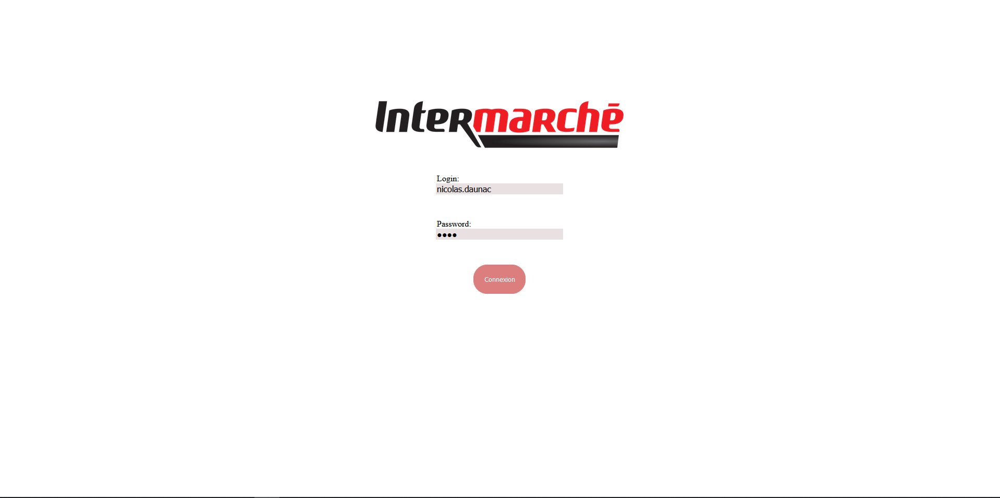
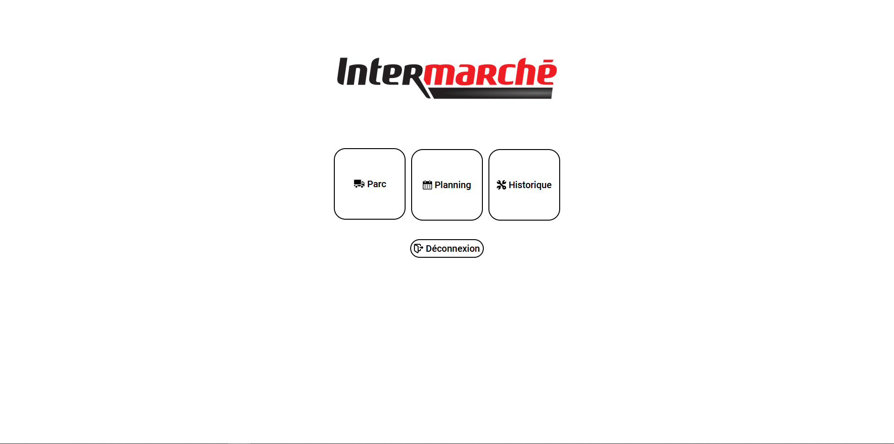
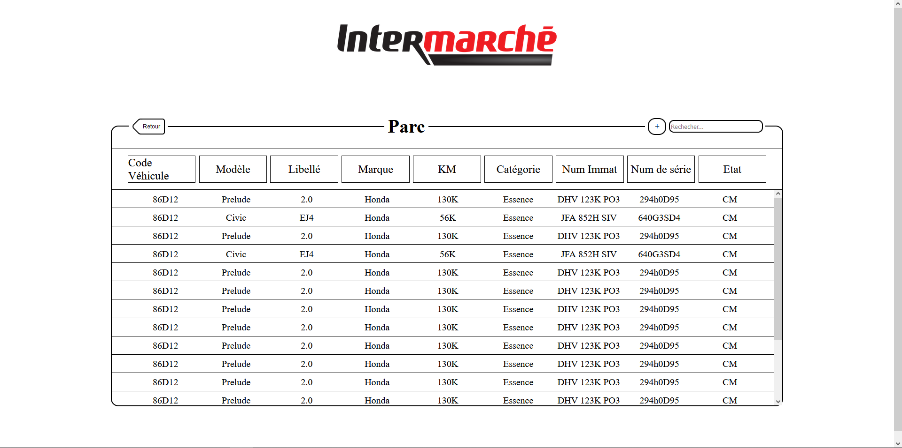
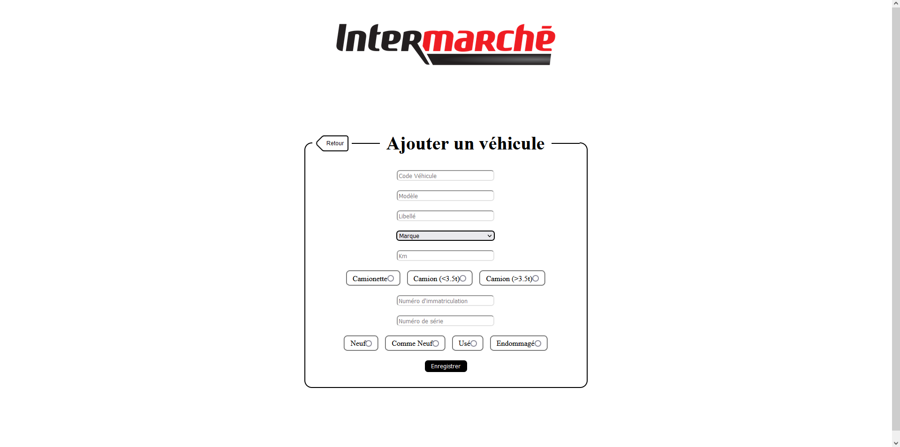
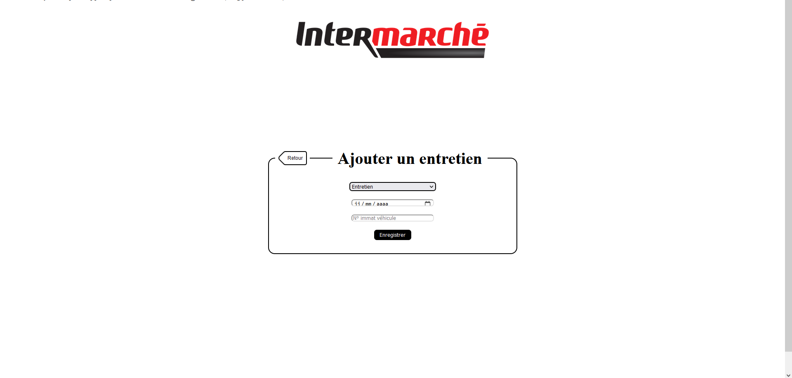

Intermarché, enseigne française de grande distribution du groupe Les mousquetaires, a depuis quelques
années élargi son domaine d'activités,
en proposant à ses clients la possibilité de louer des véhicules
(utilitaires ou véhicules de tourisme).
Le projets à pour but de créer une application web en utilisant les langages du web (HTML, CSS, PHP) pour
l'entreprise intermarché.
L'application doit permettre aux employés d'intermarché de visualiser en temps réel la flotte de véhicule
disponibl à la location, les
problèmes sur chaque véhicule ainsi que de prévoir une réparation qui s'ajoutera dans une calendrier afin de
mieux gérer les possibilités de location.
Lorsque nous arrivons sur le site nous somme accueilli par une magnifique page de connexion qui ressemble à ceci :
Lorsque nous nous connectons nous arrivons sur la page d'accueil :
Sur la page d'accueil nous pouvons voir 3 onglet qui redirige vers les différentes page de gestion que propose le site, tout d'abord nous avons l'onglet parc dans lequelle ont peut visualiser la flotte de véhicule.
Ici nous avons une liste de tout les véhicules qui appartiennent à l'entreprise, nous avons également une barre de recherche permettant de chercher un véhicule en particulier, ainsi qu'un icon +, qui nous permets d'ajouter un véhicule au parc.

sur cette page nous pouvons ajouter un véhicule, il nous suffit de rentrer les informations correspondantes.
Pour revenir sur la page d'accueil, nous avons également l'onglet planning qui nous mêne vers un planning des entretiens.
Ici nous avons tout les entretiens qui doivent être résaliser sur les véhicule, comme sur la page Parc, nous avons une barre de recherche ainsi qu'un onglet plus afin de prévoir un entretient.

Ici nous pouvons prévoir un entretient en rentrant le nom de l'entretient à prévoir, la date à laquelle il doi têtre fait ainsi que la plaque d'immatriculation
qui permet d'identifier le véhicule.
Finalement pour revenir sur la page d'accueil, il nous reste l'onglet historique, qui comme son nom l'indique est un historique de tous les entretient
fait sur les véhicules.